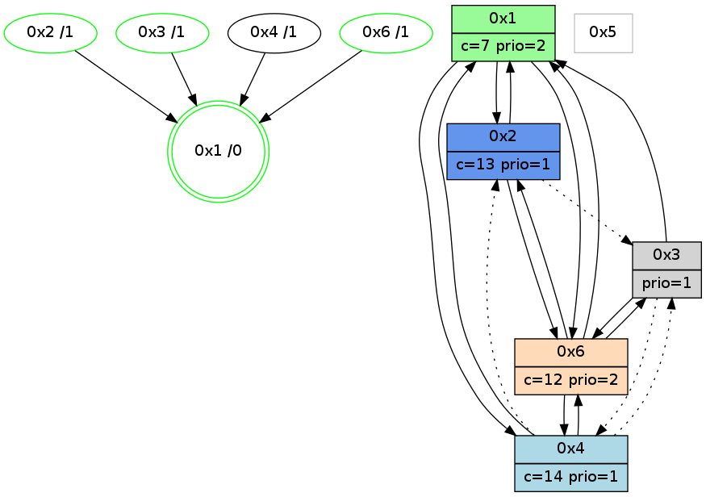

>> << IDX [start] -100 -25 -5 +0 +5 +25 +100 [1010.00559998]
 Previous packets
----------------------------------------------------------------------
1005.034551 beacon01(adaf) #0 coord=01,02,05,03,04,06 cycle=432.0ms assoc
-- color-indic=1 64 05 c5
1005.044512 beacon02(adaf) #0 coord=01,02,05,03,04,06 cycle=432.0ms assoc 64 54 3a
1005.054512 beacon05(adaf) #0 coord=01,02,05,03,04,06 cycle=432.0ms assoc 64 f2 10
1005.064512 beacon03(adaf) #0 coord=01,02,05,03,04,06 cycle=432.0ms assoc 64 6e 34
1005.074512 beacon04(adaf) #0 coord=01,02,05,03,04,06 cycle=432.0ms assoc 64 c8 1e
1005.084513 beacon06(adaf) #0 coord=01,02,05,03,04,06 cycle=432.0ms assoc 64 bc 02
1005.096665 [Hello(1): seq=711 sym=2,4,6,3 sysInfo=hasWarning,coloring-mode-on,ColoringModeRequestCalled stat=2:12,11,7,3/4:3,0,3,0/6:12,9,13,2/3:7,3,5,1]
1005.099334 [Hello(6): seq=724 sym=4,2,1,3 sysInfo=hasWarning stat=4:4,0,3,0/2:0,5,3,2/1:7,8,8,1/3:3,4,0,6]
1005.102186 [Color(3) seq=140 @0:0 prio=1 c=7,c,d;1,4,6,8,9,b,e]
1005.104233 [Color(6) seq=196 @0:0 color=12 prio=2 c=7,d,e;1,4,6,8,9,b]
1005.106323 [Color(2) seq=198 @0:0 color=13 prio=1 c=7,c,e;1,4,6,8,9,b]
----------------------------------------------------------------------
1005.526658 beacon01(adaf) #0 coord=01,02,05,03,04,06 cycle=432.0ms assoc
-- color-indic=1 64 c1 aa
1005.536620 beacon02(adaf) #0 coord=01,02,05,03,04,06 cycle=432.0ms assoc 64 90 55
1005.546619 beacon05(adaf) #0 coord=01,02,05,03,04,06 cycle=432.0ms assoc 64 36 7f
1005.556620 beacon03(adaf) #0 coord=01,02,05,03,04,06 cycle=432.0ms assoc 64 aa 5b
1005.566621 beacon04(adaf) #0 coord=01,02,05,03,04,06 cycle=432.0ms assoc 64 0c 71
1005.576620 beacon06(adaf) #0 coord=01,02,05,03,04,06 cycle=432.0ms assoc 64 78 6d
1005.588318 [Hello(4): seq=812 sym=2,1,6,3 sysInfo=hasWarning stat=2:2,2,0,0/1:14,14,13,0/6:9,13,11,3/3:5,9,2,0]
1005.590660 [STC(1) #0.149 new-neigh,tree-change,inconsistent-stability,stable,to-color d=0]
1005.592037 [Hello(2): seq=1300 sym=6,1 asym=3 sysInfo=hasWarning stat=6:1,9,10,1/1:12,12,3,0/3:0,12,11,4]
1005.594523 [Color(1) seq=238 @0:0 color=7 prio=2 c=1,4,6,8,9,b,c,d;0,2,3,5,a,e]
----------------------------------------------------------------------
1006.018765 beacon01(adaf) #0 coord=01,02,05,03,04,06 cycle=432.0ms assoc
-- color-indic=1 64 9f cb
1006.028726 beacon02(adaf) #0 coord=01,02,05,03,04,06 cycle=432.0ms assoc 64 ce 34
1006.038726 beacon05(adaf) #0 coord=01,02,05,03,04,06 cycle=432.0ms assoc 64 68 1e
1006.048727 beacon03(adaf) #0 coord=01,02,05,03,04,06 cycle=432.0ms assoc 64 f4 3a
1006.058729 beacon04(adaf) #0 coord=01,02,05,03,04,06 cycle=432.0ms assoc 64 52 10
1006.068727 beacon06(adaf) #0 coord=01,02,05,03,04,06 cycle=432.0ms assoc 64 26 0c
1006.079926 [Hello(1): seq=712 sym=2,4,6,3 sysInfo=hasWarning,coloring-mode-on,ColoringModeRequestCalled stat=2:12,12,7,3/4:4,0,3,0/6:13,10,13,2/3:7,4,5,1]
1006.085218 [Color(3) seq=141 @0:0 prio=1 c=7,c,d;1,4,6,8,9,b,e]
1006.087496 [STC(6)->1 #0.149 new-neigh,tree-change,inconsistent-stability,stable,to-color d=1]
1006.089326 [STC(4)->1 #0.149 new-neigh,tree-change,inconsistent-stability,to-color d=1]
1006.090853 [TreeStatus(6)-.->1 #0.149 new-neigh,tree-change,inconsistent-stability,stable child=1]
1006.092996 [Color(6) seq=197 @0:0 color=12 prio=2 c=7,d,e;1,4,6,8,9,b]
----------------------------------------------------------------------
1006.510874 beacon01(adaf) #0 coord=01,02,05,03,04,06 cycle=432.0ms assoc
-- color-indic=1 64 5b a4
1006.520835 beacon02(adaf) #0 coord=01,02,05,03,04,06 cycle=432.0ms assoc 64 0a 5b
1006.530835 beacon05(adaf) #0 coord=01,02,05,03,04,06 cycle=432.0ms assoc 64 ac 71
1006.540837 beacon03(adaf) #0 coord=01,02,05,03,04,06 cycle=432.0ms assoc 64 30 55
1006.550836 beacon04(adaf) #0 coord=01,02,05,03,04,06 cycle=432.0ms assoc 64 96 7f
1006.560836 beacon06(adaf) #0 coord=01,02,05,03,04,06 cycle=432.0ms assoc 64 e2 63
1006.574444 [Color(1) seq=239 @0:0 color=7 prio=2 c=1,4,6,8,9,b,c,d;0,2,3,5,a,e]
----------------------------------------------------------------------
1007.002984 beacon01(adaf) #0 coord=01,02,05,03,04,06 cycle=432.0ms assoc
-- color-indic=1 64 17 14
1007.012946 beacon02(adaf) #0 coord=01,02,05,03,04,06 cycle=432.0ms assoc 64 46 eb
1007.022946 beacon05(adaf) #0 coord=01,02,05,03,04,06 cycle=432.0ms assoc 64 e0 c1
1007.032946 beacon03(adaf) #0 coord=01,02,05,03,04,06 cycle=432.0ms assoc 64 7c e5
1007.042946 beacon04(adaf) #0 coord=01,02,05,03,04,06 cycle=432.0ms assoc 64 da cf
1007.052946 beacon06(adaf) #0 coord=01,02,05,03,04,06 cycle=432.0ms assoc 64 ae d3
1007.065237 [Color(3) seq=142 @0:0 prio=1 c=7,c,d;1,4,6,8,9,b,e]
1007.069363 [Color(2) seq=200 @0:0 color=13 prio=1 c=7,c,e;1,4,6,8,9,b]
1007.071519 [Hello(6): seq=726 sym=4,2,1,3 sysInfo=hasWarning stat=4:4,0,3,0/2:1,6,3,2/1:9,10,9,1/3:5,4,0,6]
1007.074646 [Color(6) seq=198 @0:0 color=12 prio=2 c=7,d,e;1,4,6,8,9,b]
1007.078628 [Hello(1): seq=713 sym=2,4,6,3 sysInfo=hasWarning,coloring-mode-on,ColoringModeRequestCalled stat=2:12,13,7,3/4:4,0,4,0/6:13,11,14,3/3:7,5,5,1]
----------------------------------------------------------------------
1007.495092 beacon01(adaf) #0 coord=01,02,05,03,04,06 cycle=432.0ms assoc
-- color-indic=1 64 d3 7b
1007.505054 beacon02(adaf) #0 coord=01,02,05,03,04,06 cycle=432.0ms assoc 64 82 84
1007.515053 beacon05(adaf) #0 coord=01,02,05,03,04,06 cycle=432.0ms assoc 64 24 ae
1007.525053 beacon03(adaf) #0 coord=01,02,05,03,04,06 cycle=432.0ms assoc 64 b8 8a
1007.535053 beacon04(adaf) #0 coord=01,02,05,03,04,06 cycle=432.0ms assoc 64 1e a0
1007.545055 beacon06(adaf) #0 coord=01,02,05,03,04,06 cycle=432.0ms assoc 64 6a bc
1007.558924 [Color(1) seq=240 @0:0 color=7 prio=2 c=1,4,6,8,9,b,c,d;0,2,3,5,a,e]
----------------------------------------------------------------------
1007.987202 beacon01(adaf) #0 coord=01,02,05,03,04,06 cycle=432.0ms assoc
-- color-indic=1 64 9e 7c
1007.997164 beacon02(adaf) #0 coord=01,02,05,03,04,06 cycle=432.0ms assoc 64 cf 83
1008.007164 beacon05(adaf) #0 coord=01,02,05,03,04,06 cycle=432.0ms assoc 64 69 a9
1008.017163 beacon03(adaf) #0 coord=01,02,05,03,04,06 cycle=432.0ms assoc 64 f5 8d
1008.027164 beacon04(adaf) #0 coord=01,02,05,03,04,06 cycle=432.0ms assoc 64 53 a7
1008.037165 beacon06(adaf) #0 coord=01,02,05,03,04,06 cycle=432.0ms assoc 64 27 bb
1008.049466 [Color(3) seq=143 @0:0 prio=1 c=7,c,d;1,4,6,8,9,b,e]
1008.053583 [Color(2) seq=201 @0:0 color=13 prio=1 c=7,c,e;1,4,6,8,9,b]
1008.055727 [Hello(6): seq=727 sym=4,2,1,3 sysInfo=hasWarning stat=4:4,0,3,0/2:1,6,3,2/1:10,11,9,1/3:6,4,0,6]
1008.058854 [Color(6) seq=199 @0:0 color=12 prio=2 c=7,d,e;1,4,6,8,9,b]
1008.063371 [Hello(1): seq=714 sym=2,4,6 sysInfo=hasWarning,coloring-mode-on,ColoringModeRequestCalled stat=2:12,13,7,3/4:4,0,4,0/6:13,11,14,3]
1008.066684 [STC(1) #0.150 new-neigh,tree-change,inconsistent-stability,stable,to-color d=0]
----------------------------------------------------------------------
1008.479312 beacon01(adaf) #0 coord=01,02,05,03,04,06 cycle=432.0ms assoc
-- color-indic=1 64 5a 13
1008.489272 beacon02(adaf) #0 coord=01,02,05,03,04,06 cycle=432.0ms assoc 64 0b ec
1008.499273 beacon05(adaf) #0 coord=01,02,05,03,04,06 cycle=432.0ms assoc 64 ad c6
1008.509275 beacon03(adaf) #0 coord=01,02,05,03,04,06 cycle=432.0ms assoc 64 31 e2
1008.519273 beacon04(adaf) #0 coord=01,02,05,03,04,06 cycle=432.0ms assoc 64 97 c8
1008.529275 beacon06(adaf) #0 coord=01,02,05,03,04,06 cycle=432.0ms assoc 64 e3 d4
1008.540869 [STC(6)->1 #0.150 new-neigh,tree-change,inconsistent-stability,stable,to-color d=1]
1008.542963 [Color(1) seq=241 @0:0 color=7 prio=2 c=1,4,6,8,9,b,c,d;0,2,3,5,a,e]
1008.544914 [Hello(4): seq=815 sym=1,6,3 asym=2 sysInfo=hasWarning stat=1:0,1,15,0/6:11,0,11,4/3:5,11,2,0/2:3,2,0,0]
1008.548560 [STC(3)->1 #0.150 new-neigh,tree-change,inconsistent-stability,stable,to-color d=1]
1008.552309 [STC(2)->1 #0.150 new-neigh,tree-change,inconsistent-stability,stable,to-color d=1]
1008.558314 [STC(4)->1 #0.150 new-neigh,tree-change,inconsistent-stability,to-color d=1]
----------------------------------------------------------------------
1008.971421 beacon01(adaf) #0 coord=01,02,05,03,04,06 cycle=432.0ms assoc
-- color-indic=1 64 16 a3
1008.981383 beacon02(adaf) #0 coord=01,02,05,03,04,06 cycle=432.0ms assoc 64 47 5c
1008.991383 beacon05(adaf) #0 coord=01,02,05,03,04,06 cycle=432.0ms assoc 64 e1 76
1009.001383 beacon03(adaf) #0 coord=01,02,05,03,04,06 cycle=432.0ms assoc 64 7d 52
1009.011383 beacon04(adaf) #0 coord=01,02,05,03,04,06 cycle=432.0ms assoc 64 db 78
1009.021383 beacon06(adaf) #0 coord=01,02,05,03,04,06 cycle=432.0ms assoc 64 af 64
1009.033666 [Color(3) seq=144 @0:0 prio=1 c=7,c,d;1,4,6,8,9,b,e]
1009.037799 [Color(2) seq=202 @0:0 color=13 prio=1 c=7,c,e;1,4,6,8,9,b]
1009.039950 [Hello(6): seq=728 sym=4,2,1,3 sysInfo=hasWarning stat=4:4,0,4,0/2:1,6,4,2/1:11,12,10,1/3:7,4,1,6]
1009.043077 [Color(6) seq=200 @0:0 color=12 prio=2 c=7,d,e;1,4,6,8,9,b]
1009.047234 [Hello(1): seq=715 sym=2,4,6 sysInfo=hasWarning,coloring-mode-on,ColoringModeRequestCalled stat=2:13,13,8,3/4:4,0,5,0/6:13,11,15,3]
----------------------------------------------------------------------
1009.463530 beacon01(adaf) #0 coord=01,02,05,03,04,06 cycle=432.0ms assoc
-- color-indic=1 64 d2 cc
1009.483492 beacon05(adaf) #0 coord=01,02,05,03,04,06 cycle=432.0ms assoc 64 25 19
1009.513492 beacon06(adaf) #0 coord=01,02,05,03,04,06 cycle=432.0ms assoc 64 6b 0b
1009.525047 [Hello(4): seq=816 sym=1,6 asym=2,3 sysInfo=hasWarning stat=1:1,1,15,0/6:12,1,11,4/2:3,2,0,0/3:5,12,2,0]
1009.526897 [Color(1) seq=242 @0:0 color=7 prio=2 c=1,4,6,8,9,b,c,d;0,2,3,5,a,e]
----------------------------------------------------------------------
1009.955638 beacon01(adaf) #0 coord=01,02,05,03,04,06 cycle=432.0ms assoc
-- color-indic=1 64 f7 f1
1009.965598 beacon02(adaf) #0 coord=01,02,05,03,04,06 cycle=432.0ms assoc 64 a6 0e
1009.975599 beacon05(adaf) #0 coord=01,02,05,03,04,06 cycle=432.0ms assoc 64 00 24
1009.985599 beacon03(adaf) #0 coord=01,02,05,03,04,06 cycle=432.0ms assoc 64 9c 00
1009.995599 beacon04(adaf) #0 coord=01,02,05,03,04,06 cycle=432.0ms assoc 64 3a 2a